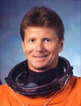

Lyndon B. Johnson Space Center
Houston, Texas 77058
|
National Aeronautics and Space Administration Lyndon B. Johnson Space Center Houston, Texas 77058 |
 |
Biographical Data |
||
Gennady Ivanovich Padalka (Colonel, Russian Air Force)
Test-Cosmonaut of Yu.A. Gagarin Cosmonaut Training Center
PERSONAL DATA: Born June 21, 1958, in Krasnodar, Russia. Married to Irina Anatolievna Padalka (Ponomareva). They have three daughters, Yulia, Ekaterina and Sonya. Gennady enjoys the theater, parachute sport and diving.
EDUCATION: Graduated from Eisk Military Aviation College in 1979; in 1994 he left UNESCO International Center of Instruction Systems, where he was an engineer–ecologist.
SPECIAL HONORS: Awarded the Star of Russian Federation Hero, and the title of Russian Federation Test-Cosmonaut.
EXPERIENCE: After graduation from the Military College in 1979, Gennady Padalka served as a pilot and a senior pilot in the Air Force.
He was selected as a cosmonaut candidate to start training at the Gagarin Cosmonaut Training Center in 1989. From June 1989 to January 1991 he attended basic space training. In 1991 Padalka was qualified as a test-cosmonaut.
Gennady Padalka is a First Class Pilot, has flown 6 types of aircraft, and has logged 1500 hours. He is an Instructor of General Parachute Training, and has performed more than 300 parachute jumps.
From August 28, 1996 to July 30, 1997, he trained for space flight on the Soyuz-TM transport vehicle/Mir orbital complex as a commander of the back up crew for Mir 24/NASA-5, 6 Russian-American program of the 24th primary Expedition, Pegasus Russian–French program and Euro-Mir program).
October 1997 to August 1998 Padalka attended training for a space a flight aboard the Soyuz-TM/Mir orbital complex as a primary crew commander (Expedition 26 Program).
August 13, 1998, to February 28, 1999, he served aboard the Soyuz-TM-28/Mir orbital complex as the Expedition 26 crew commander, and logged 198 days in space.
June 1999 through July 2000, Padalka attended training for a space flight on “Soyuz-TM” transport vehicle as an ISS contingency crew commander.
August 2000 to November 2001, Gennady Padalka attended training for a space flight as the ISS-4 back-up crew commander.
In March 2002, Padalka was assigned as station commander of the ISS Expedition-9 crew. Expedition-9 was launched from the Baikonur Cosmodrome, Kazakhstan aboard a Soyuz TMA-4 spacecraft, docking with the International Space Station on April 21, 2004. Following a week of joint operations and handover briefings, they replaced the Expedition-8 crew who returned to Earth. In a six-month tour of duty aboard the station Padalka continued ISS science operations, maintained Station systems, and performed four spacewalks. The Expedition-9 mission concluded after undocking and landing back in Kazakhstan on October 23, 2004. In completing this mission, Padalka logged an additional 187 days, 21 minutes and 17 seconds in space, and 15 hours, 45 minutes and 22 seconds of EVA time.
Padalka currently serves as commander of the Expedition-19 mission aboard the International Space Station. On March 26, 2009, he commanded the Soyuz spacecraft that launched him and astronaut Michael Barratt to the station. They will be joined by Nicole Stott, who will arrive with the crew of STS-128.
MARCH 2009
{kind=link}